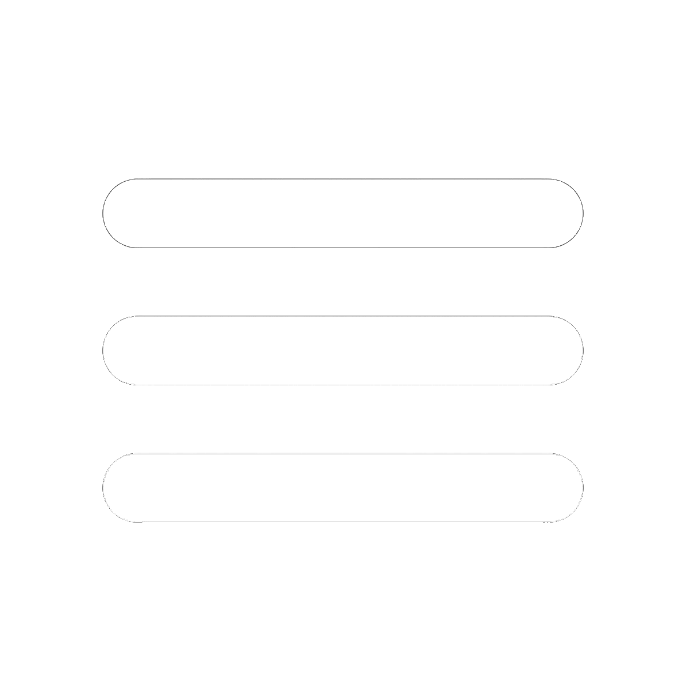

×
Accueil Administratif
Utilisateurs
Actualités
Évènements
Liens
Contact
Témoignages
Présentation du programme
Vidéo d'accueil
Logs du Site Web
Déconnexion

Logs du site web
21 février 2001
Fabrice Déhoulé
A modifié la vidéo d'accueil